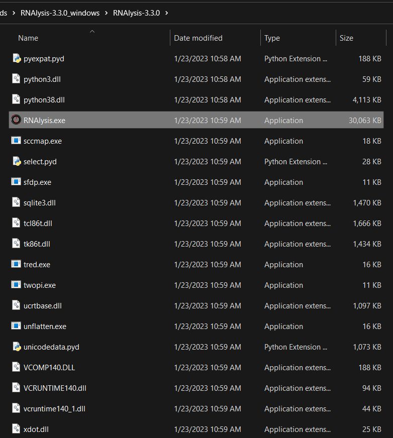
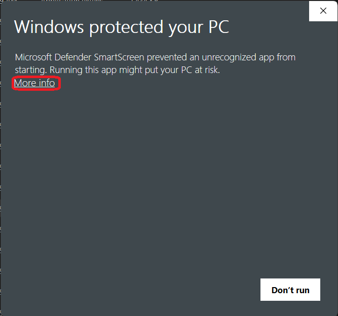
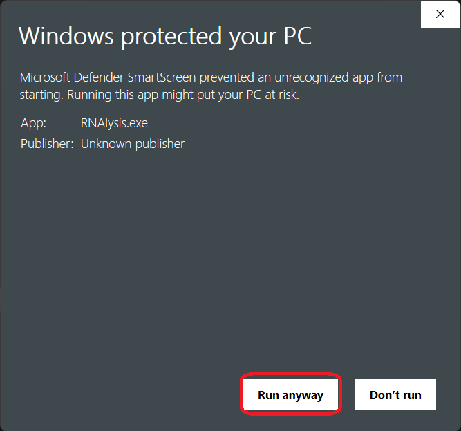

Installation
Latest version: 
RNAlysis stand-alone app (most beginner-friendly)
A stand-alone version of RNAlysis is available for both Windows and MacOS. This version is the most beginner-friendly to install, since it requires the least amount of setup to make it work.
How to install it
You can download the latest stand-alone of RNAlysis from the GitHub Releases page (‘RNAlysis-X.Y.Z_windows.zip’ for Windows, and ‘RNAlysis-X.Y.Z_macos.zip’ for MacOS).
If you use the RNAlysis stand-alone app, the only other programs you will need to install are external programs that interface with RNAlysis - such as R (if you want to use DESeq2), and kallisto.
How to run it
First, unzip the .zip file you downloaded.
On Windows:
After unzipping, enter the unzipped directory and open the “RNAlysis.exe” file:
{kind=link}
If this is the first time you launch RNAlysis, the following messagebox will show up. To get past it, first click on “More info”:
{kind=link}
Next, click on the “Run anyway” button at the bottom-right corner:
{kind=link}
The RNAlysis app should launch now - this may take a minute or two, so be patient!
On MacOS:
After unzipping, open the “RNAlysis.dmg” file. The RNAlysis app should launch now - this may take a minute or two, so be patient!
Further guidance
If you need further guidance with installing the stand-alone version of RNAlysis, please follow this installation guide which was kindly provided by Prof. Matthias Wilm.
Install as a Python package with pip (best performance)
You can install RNAlysis as a Python package via pip.
How to install it
If you don’t have pip installed, this Python installation guide can guide you through the process.
To install the full version of RNAlysis (includes additional features that might not work out-of-the-box on all machines), you should first install GraphViz, R, and kallisto.
On Windows: you may also need to install Microsoft Visual C++ 14.0 or greater, and Perl.
On Linux: you may also need to install Qt 5 Image Formats to view tutorial videos from within RNAlysis. To do so on Debian/ubuntu systems, use the command sudo apt install qt5-image-formats-plugins. To do so on Red Hat-based distros such as Fedora, use the command dnf install qt5-qtimageformats.
After installing these external dependencies, you can install RNAlysis by typing the following command in your terminal window:
pip install RNAlysis[all]
If you’re having trouble installing the full version of RNAlysis, you can install the basic version first. To install the basic version of RNAlysis, use the following command in your terminal window:
pip install RNAlysis
You can also install RNAlysis with only some of the following additional features:
fastq - adapter trimming and RNA-seq transcript quantification of Fastq files
hdbscan - clustering analysis using the HDBSCAN method
single-set - single-set enrichment analysis using the XL-mHG test
randomization - improved performance for randomization tests
reports - automatically generate interactive analysis reports
by calling the install command with one or more additional features inside the square brackets, separated by commas. For example:
pip install RNAlysis[fastq,single-set]
will install the basic version of RNAlysis, along with the fastq and single-set additional features.
How to run it
If you installed RNAlysis with pip, you can open the RNAlysis app by executing the command rnalysis-gui from your terminal.
Alternatively, you can open the RNAlysis app by typing the following code into a Python console:
>>> from rnalysis import gui
>>> gui.run_gui()
In addition, you can write Python code that uses RNAlysis functions as described in the programmatic interface user guide.
From sources
The source code for RNAlysis can be downloaded from the Github repository.
How to install it
First, clone the public repository:
$ git clone git://github.com/GuyTeichman/rnalysis
Once you have a copy of the source, you can install the basic version of RNAlysis with:
$ python -m pip setup.py install
Or you can install the full version of RNAlysis with:
$ python -m pip setup.py install .[all]
How to run it
If you installed RNAlysis from source, you can open the RNAlysis app by executing the command rnalysis-gui from your terminal.
Alternatively, you can open the RNAlysis app by typing the following code into a Python console:
>>> from rnalysis import gui
>>> gui.run_gui()
In addition, you can write Python code that uses RNAlysis functions as described in the programmatic interface user guide.